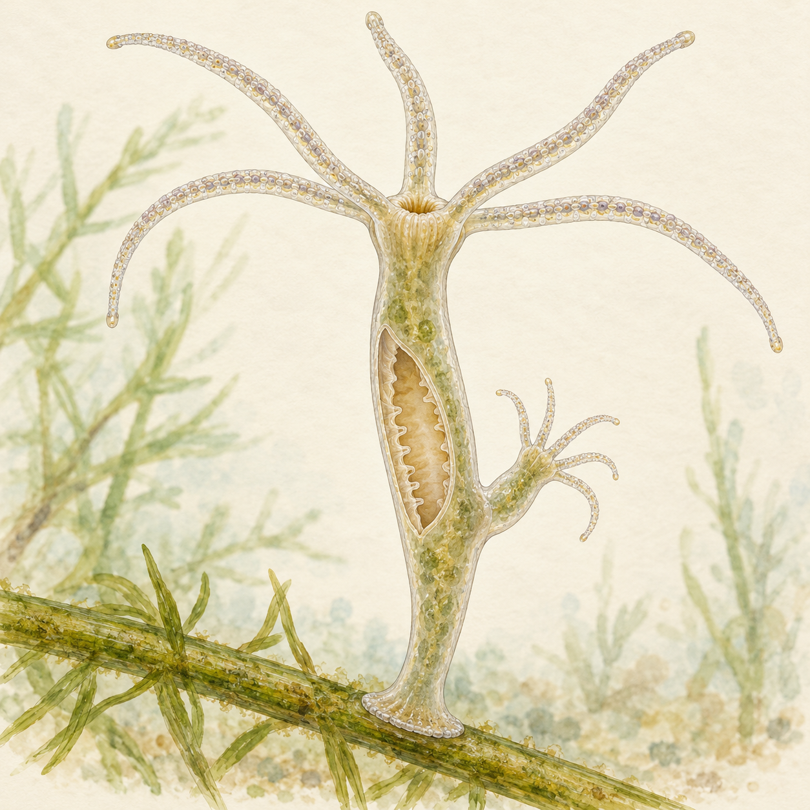
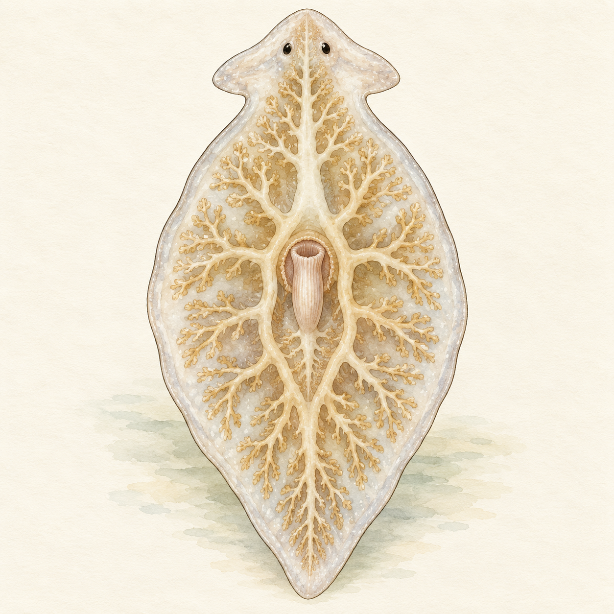
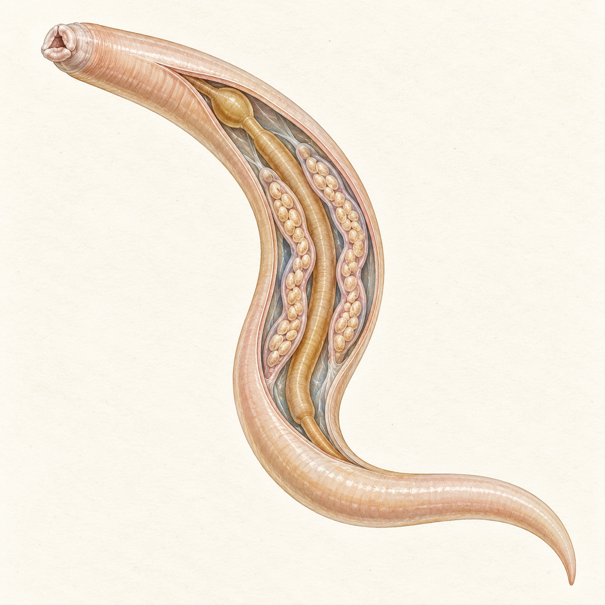
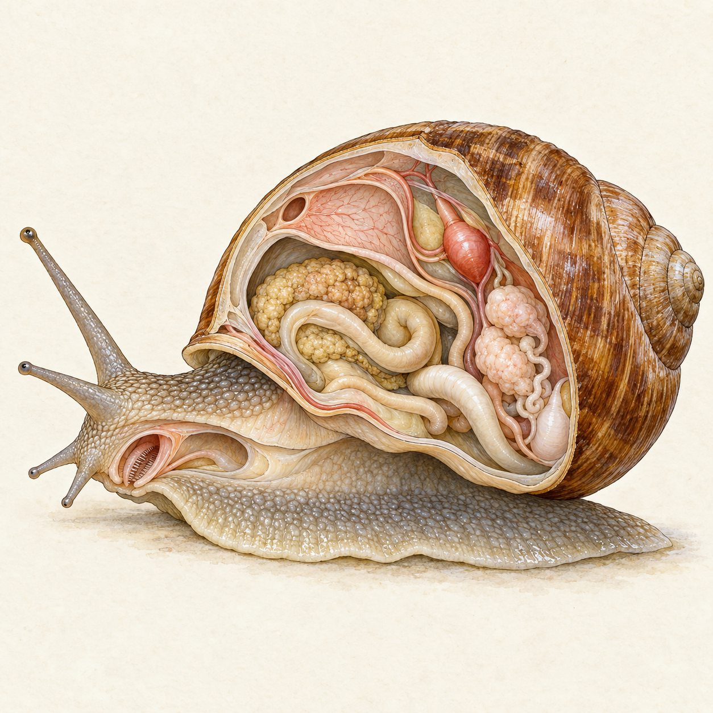
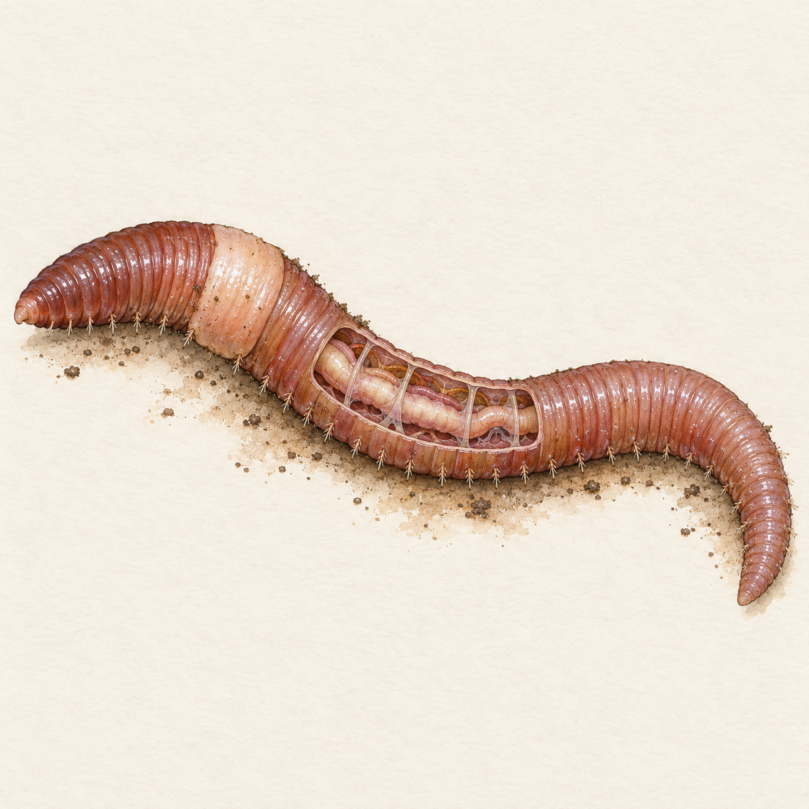
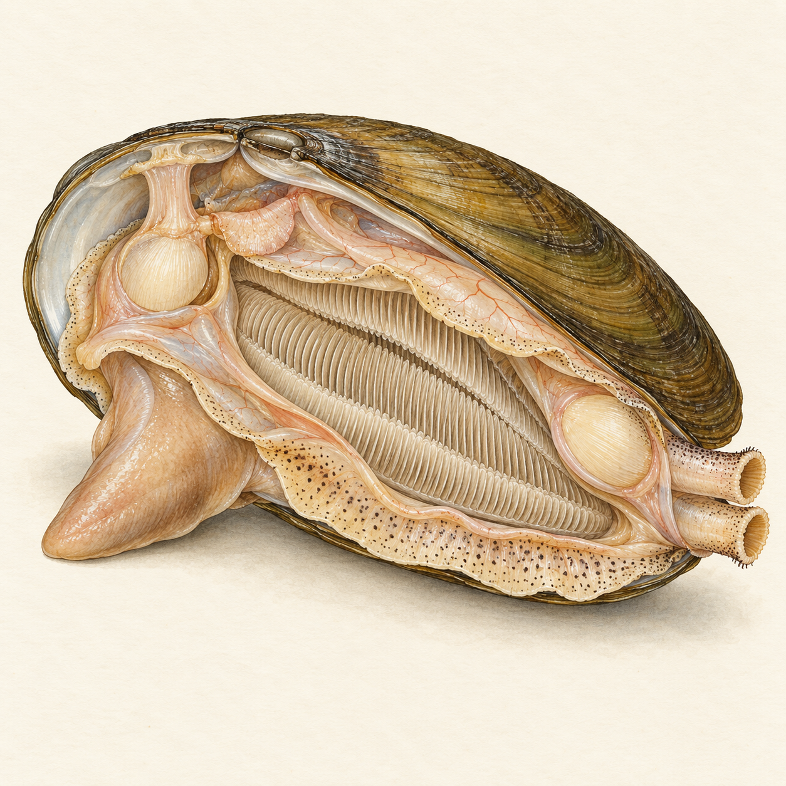

Nezmar
žahavci
Vyber očíslovanou část.
Pro 6.–7. ročník: žahavci, ploštěnci, hlísti, měkkýši a kroužkovci.
Vyber část těla a zjisti, jak živočichovi slouží.

žahavci
Vyber očíslovanou část.

ploštěnci
Vyber očíslovanou část.

hlísti
Vyber očíslovanou část.

měkkýši — plži
Vyber očíslovanou část.

kroužkovci
Vyber očíslovanou část.

měkkýši — mlži
Vyber očíslovanou část.
Bezobratlí nemají vnitřní kostru s páteří. Patří sem žahavci (medúzy), ploštěnci, hlísti, měkkýši (hlemýžď, škeble) a kroužkovci (žížala, pijavka).